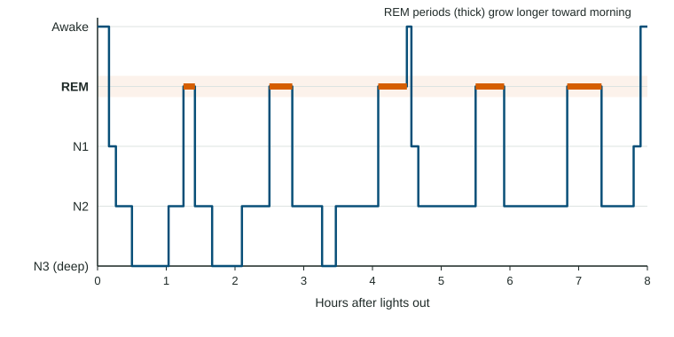

Sleep
Consciousness shifts across a roughly 24-hour circadian rhythm.
Part 1 · Hook
Why this matters
Part 2 · Before you start
What this builds on
Part 3 · Prerequisite check
Quick check before you start
1. Which hormone rises in the dark and helps time sleep?
- Melatonin
- Ghrelin
- Adrenaline
- Leptin
Show the answer
Melatonin rises in the evening as light fades.
- Correct: Melatonin:
- Ghrelin:
- Adrenaline:
- Leptin:
2. What does an EEG record?
- Electrical activity of the brain from the scalp
- Blood flow deep inside the brain
- The size of brain structures
- Hormone levels in the blood
Show the answer
An EEG records electrical activity through electrodes on the scalp; it is how sleep stages are identified.
- Correct: Electrical activity of the brain from the scalp:
- Blood flow deep inside the brain:
- The size of brain structures:
- Hormone levels in the blood:
3. Which part of the brainstem controls arousal and alertness?
- The reticular activating system
- The medulla
- The cerebellum
- The hippocampus
Show the answer
The reticular activating system controls waking and alertness.
- Correct: The reticular activating system:
- The medulla:
- The cerebellum:
- The hippocampus:
Part 4 · See it
See it first

Part 5 · Step by step
How it works, step by step
- Evening darkness raises melatonin, following the circadian rhythmyou feel sleepy and enter N1, light sleep with drifting thoughts and hypnagogic sensations
- Sleep deepens through N2 into N3brain waves slow into large delta waves and the body does restorative work
- After about 90 minutes the brain cycles up into REMthe brain becomes active, the eyes dart, the major muscles go limp and vivid dreams are common
- The cycle repeats four or five timesN3 shrinks and REM periods lengthen toward morning
- Part of the cycle fails or is cut shortsleep disorders (insomnia, narcolepsy, sleep apnea, sleepwalking, REM sleep behavior disorder) and poorer memory and mood follow
Part 6 · Key ideas
Key ideas
- Your circadian rhythm is a roughly 24-hour clock set by light; melatonin rises at night. Teens' clocks naturally shift later.
- Sleep cycles about every 90 minutes: N1 (light, falling sensations), N2 (most of the night), N3 (deep, slow delta waves, mostly early), then REM (active brain, darting eyes, limp muscles, vivid dreams), longer toward morning.
- Why sleep: restoration (the body and brain recover and repair) and consolidation (new memories are stabilized). Dreams: activation-synthesis (the cortex makes a story from random brainstem signals) or consolidation (dreams reflect memory processing).
- Disorders: insomnia (trouble falling or staying asleep), narcolepsy (sudden sleep, quick REM), sleep apnea (breathing stops), somnambulism (sleepwalking, in N3), REM sleep behavior disorder (acting out dreams).
Part 7 · Misconception
A common mistake
The wrong idea: The brain shuts down during sleep, and the deepest sleep is when you dream.
What actually happens: The brain is busy all night. Deepest sleep is N3, with slow waves and few vivid dreams; the vivid dreams come mostly in REM, when the brain is nearly as active as when awake.
Part 8 · Check yourself
Check yourself
Exam-style questions. Anything you miss goes into your review queue.
Data
Sleep stages across one night (a hypnogram)
A sleep lab recorded one 17-year-old volunteer's brain waves, eye movements and muscle activity through an 8-hour night (invented data for practice). The graph shows which stage she was in at each moment, from Awake at the top to N3 at the bottom; N1, N2 and N3 are the NREM stages from light to deep. The five REM periods lasted 10, 20, 25, 25, 30 minutes, in order.
1. According to the hypnogram, when did the sleeper spend the most time in N3, the deepest stage?
- In the first half of the night
- In the last two hours of the night
- Spread evenly across the night
- Just before each REM period
Show the answer
The line reaches N3 in the first three to four hours and does not reach it after that. Deep N3 sleep is concentrated early in the night.
- Correct: In the first half of the night: Right: N3 appears in the first half of the night and then fades.
- In the last two hours of the night: In the last two hours the sleeper cycles between N2 and REM, with no N3.
- Spread evenly across the night: N3 is bunched early, not spread evenly.
- Just before each REM period: REM periods follow N2, not N3.
2. What pattern do the REM periods show across the night?
- They come in cycles of about 90 minutes and get longer toward morning
- They come in cycles of about 90 minutes and get shorter toward morning
- They come once, in the middle of the night, and last about an hour
- They come at random times and stay about the same length each time
Show the answer
REM periods start at about 1.3, 2.5, 4.1, 5.5, 6.8 hours, roughly every 90 minutes, and grow from 10 to 30 minutes.
- Correct: They come in cycles of about 90 minutes and get longer toward morning: Right: regular cycles of about 90 minutes, with longer REM periods later.
- They come in cycles of about 90 minutes and get shorter toward morning: This reverses the trend: the last REM period is the longest.
- They come once, in the middle of the night, and last about an hour: There are five REM periods, not one.
- They come at random times and stay about the same length each time: They follow a regular cycle and their lengths increase.
3. Using the REM period lengths given above the graph, how many minutes did the sleeper spend in REM in all?
Type a number (min). No calculator needed: work it out by hand, as on the exam.
Show the answer
10 + 20 + 25 + 25 + 30 = 110 minutes of REM.
- Answer: 110 min
4. Kenji flies from Los Angeles to Tokyo. For several days he is wide awake at 3 a.m. and sleepy at noon. What best explains this?
- His circadian rhythm is still set to Los Angeles time
- He is spending too long in N3 sleep each night
- He has developed narcolepsy from the long flight
- His REM sleep has been replaced by NREM sleep
Show the answer
The body's roughly 24-hour clock, set mainly by light, takes days to shift to a new time zone. Until it does, his sleepiness follows home time.
- Correct: His circadian rhythm is still set to Los Angeles time: Right: jet lag is a circadian rhythm out of step with local time.
- He is spending too long in N3 sleep each night: Deep N3 sleep does not explain being awake at night and sleepy at noon.
- He has developed narcolepsy from the long flight: Narcolepsy is a lasting disorder of sudden sleep attacks, not a result of travel.
- His REM sleep has been replaced by NREM sleep: He still cycles through both REM and NREM; the timing of sleep is off.
5. A sleep technician sees a sleeper's EEG show fast, irregular waves like those of waking, while the eyes dart under the lids and the arm and leg muscles are limp. Which stage is this?
- REM sleep
- N3 sleep
- N1 sleep
- Awake
Show the answer
REM sleep combines an active, waking-like brain, rapid eye movements and near-paralysis of the major muscles. Vivid dreams are most common here.
- Correct: REM sleep: Right: active brain, darting eyes and limp muscles define REM.
- N3 sleep: N3 shows large, slow delta waves, not fast waves.
- N1 sleep: N1 is light drifting-off sleep without rapid eye movements or muscle paralysis.
- Awake: An awake person has normal muscle tone; limp muscles point to REM.
6. A 9-year-old gets up about an hour after falling asleep, walks to the kitchen with open eyes, and remembers nothing in the morning. Which disorder fits, and in which stage does it usually happen?
- Somnambulism, in N3 sleep
- Somnambulism, in REM sleep
- Narcolepsy, in REM sleep
- REM sleep behavior disorder, in N3 sleep
Show the answer
Sleepwalking (somnambulism) happens during deep N3 sleep, which is why it occurs early in the night and is more common in children, who have more N3.
- Correct: Somnambulism, in N3 sleep: Right: sleepwalking arises from deep N3 sleep early in the night.
- Somnambulism, in REM sleep: In REM the major muscles are largely paralyzed, so ordinary sleepwalking does not come from REM.
- Narcolepsy, in REM sleep: Narcolepsy is sudden sleep during the day, not walking at night.
- REM sleep behavior disorder, in N3 sleep: REM sleep behavior disorder happens in REM, not N3, and involves acting out dreams.
7. Which statement matches the activation-synthesis theory of dreaming?
- In REM, random brainstem signals are woven by the cortex into a story
- Dreams replay the day so the brain can sort and store new memories
- Sleep lets the body repair tissue and restore energy used during the day
- Dreams show hidden wishes that the dreamer would reject while awake
Show the answer
Activation-synthesis says dreams start as random neural activity from the brainstem during REM; the cortex synthesizes it into a story, which is why dreams can be bizarre.
- Correct: In REM, random brainstem signals are woven by the cortex into a story: Right: random activation, then the cortex makes sense of it.
- Dreams replay the day so the brain can sort and store new memories: That is the consolidation view of sleep and dreaming.
- Sleep lets the body repair tissue and restore energy used during the day: That is the restoration theory, about why we sleep, not what dreams are.
- Dreams show hidden wishes that the dreamer would reject while awake: Hidden-wish dream theories are outside this course and have little scientific support.
Part 9 · Summary
Summary
Part 10 · Up next
What comes next
Part 11 · Connections